In-the-wild
Input Image
Rigging
Input Image
Rigging
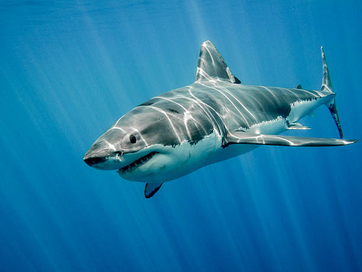


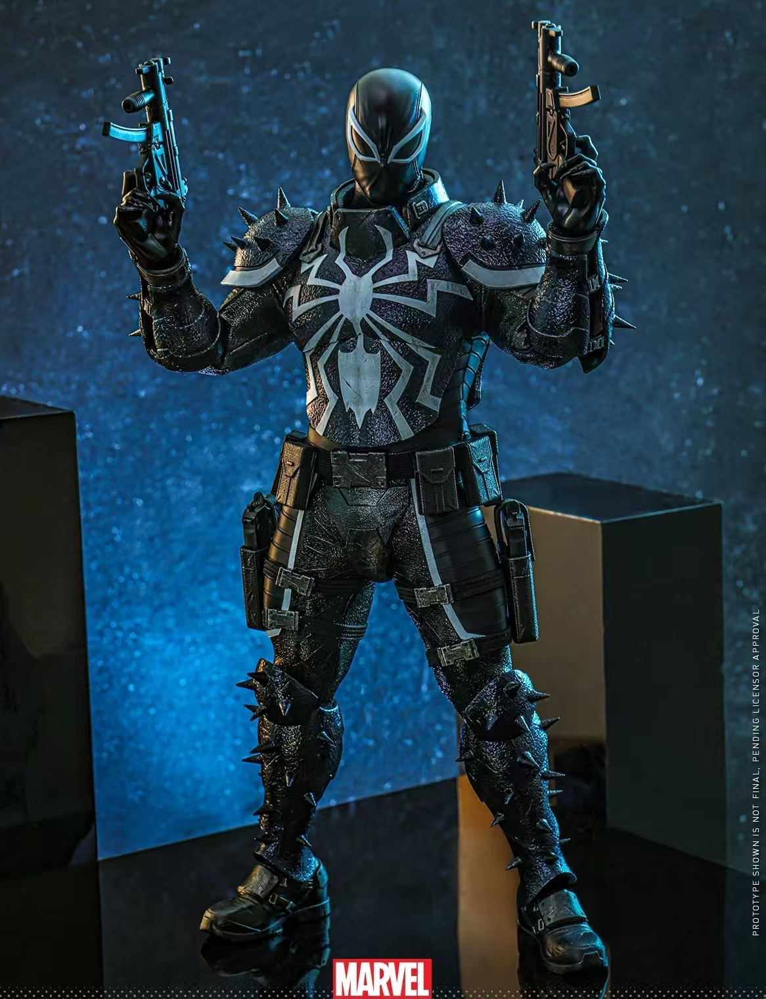


We introduce Auto-Connect, a novel approach for automatic rigging that explicitly preserves skeletal connectivity through a connectivity-preserving tokenization scheme. Unlike previous methods that predict bone positions represented as two joints or first predict points before determining connectivity, our method employs special tokens to define endpoints for each joint's children and for each hierarchical layer, effectively automating connectivity relationships. This approach significantly enhances topological accuracy by integrating connectivity information directly into the prediction framework. To further guarantee high-quality topology, we implement a topology-aware reward function that quantifies topological correctness, which is then utilized in a post-training phase through reward-guided Direct Preference Optimization. Additionally, we incorporate implicit geodesic features for latent top-k bone selection, which substantially improves skinning quality. By leveraging geodesic distance information within the model's latent space, our approach intelligently determines the most influential bones for each vertex, effectively mitigating common skinning artifacts. This combination of connectivity-preserving tokenization, reward-guided fine-tuning, and geodesic-aware bone selection enables our model to consistently generate more anatomically plausible skeletal structures with superior deformation properties.
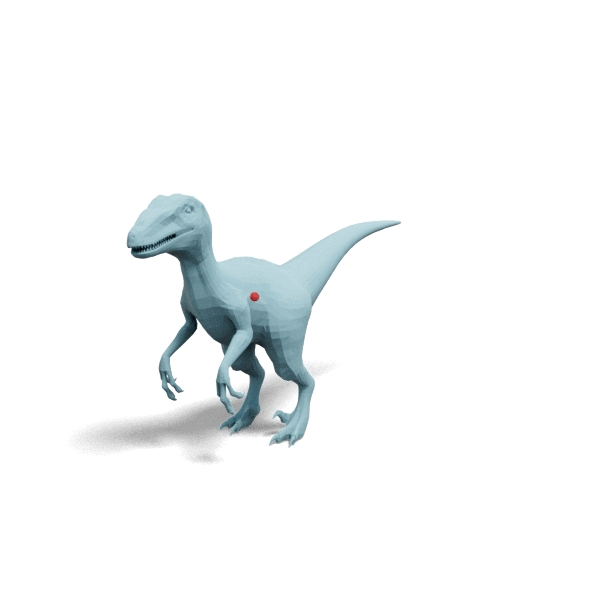
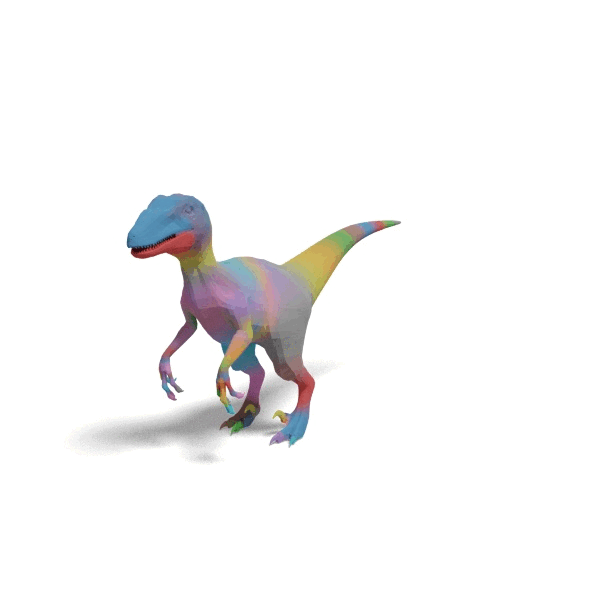
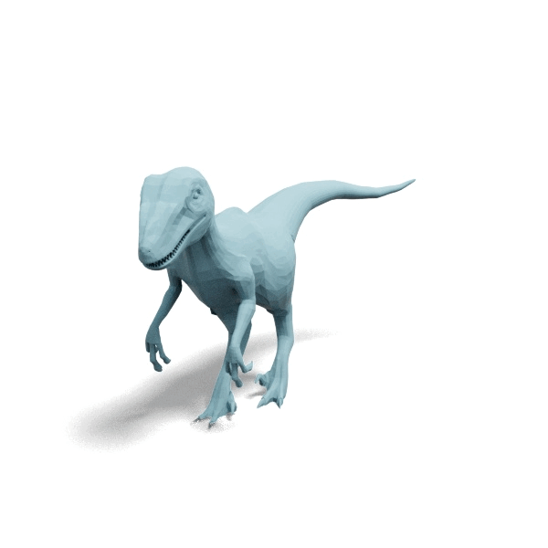
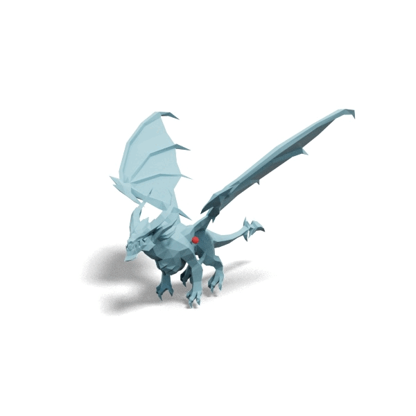
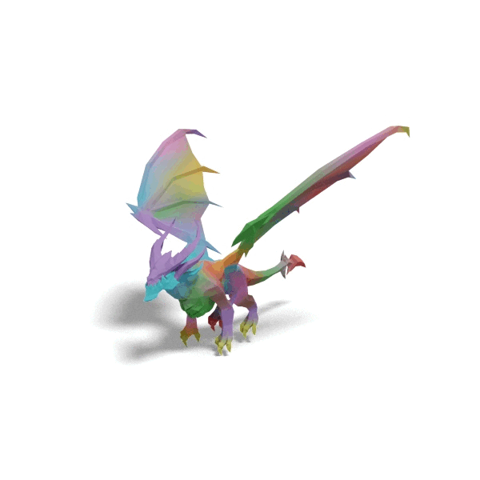
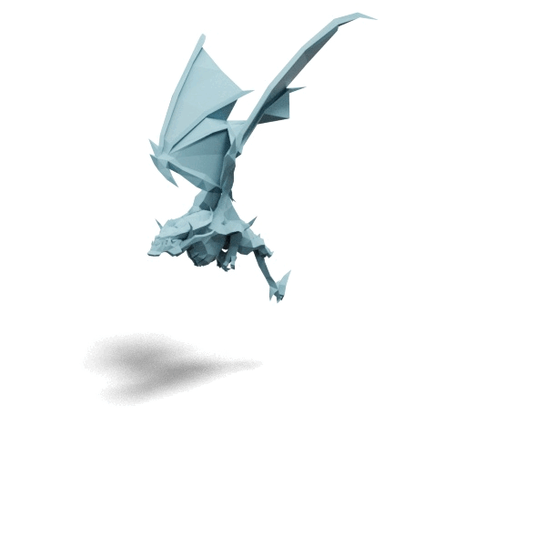
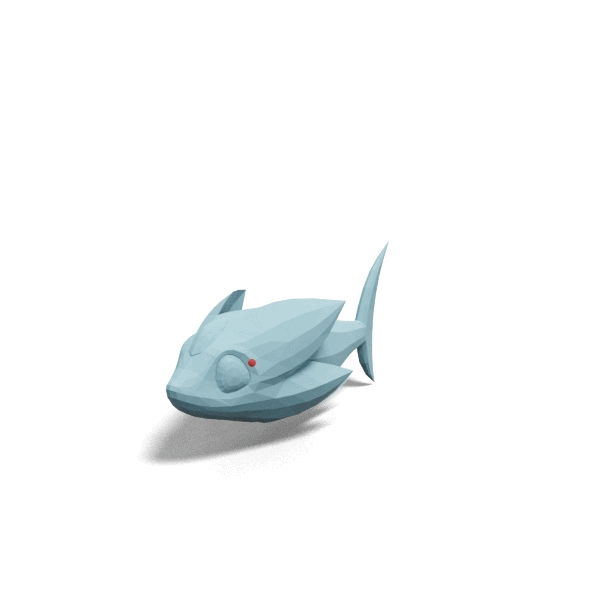
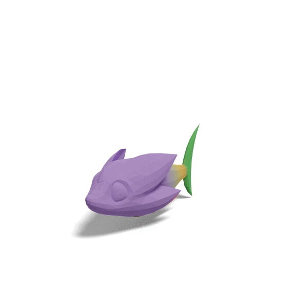
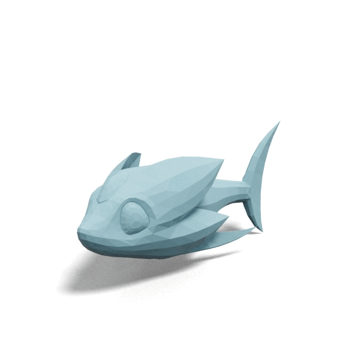

